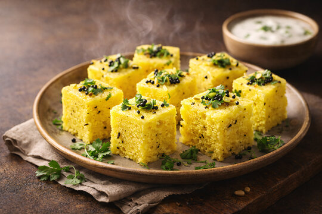
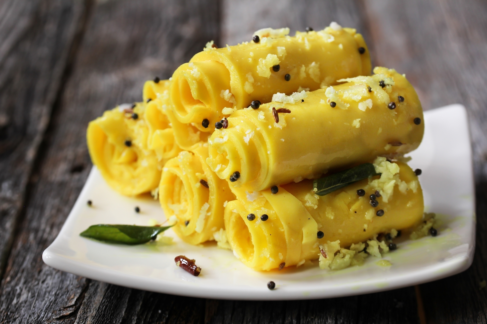
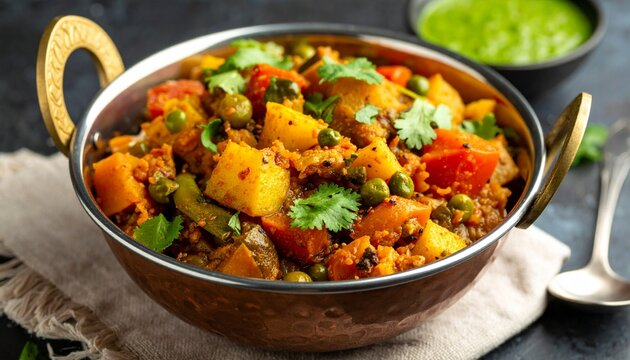

About Our Recipes
Growing up in a Gujarati household, I learned these recipes from my mom and grandmother. These dishes remind me of home and I wanted to share them with everyone. All recipes are tested and easy to follow.
Popular Recipes

Khaman Dhokla
Prep: 20 min | Cook: 15 min
Easy
Soft and fluffy steamed snack, perfect for breakfast or evening tea
View Recipe
Methi Thepla
Prep: 15 min | Cook: 20 min
Easy
Traditional flatbread with fenugreek leaves, great for travel
View Recipe

Undhiyu
Prep: 40 min | Cook: 45 min
Medium
Mixed vegetable curry with unique winter flavors
View Recipe
Shrikhand
Prep: 10 min | Chill: 2 hours
Easy
Sweet yogurt dessert with cardamom and saffron
View RecipeCooking Tips
- Always use fresh ingredients for best taste
- Don't skip the tempering - it adds so much flavor
- Adjust spice levels according to your preference
- Most Gujarati dishes taste better the next day